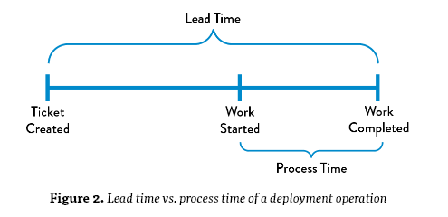
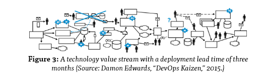
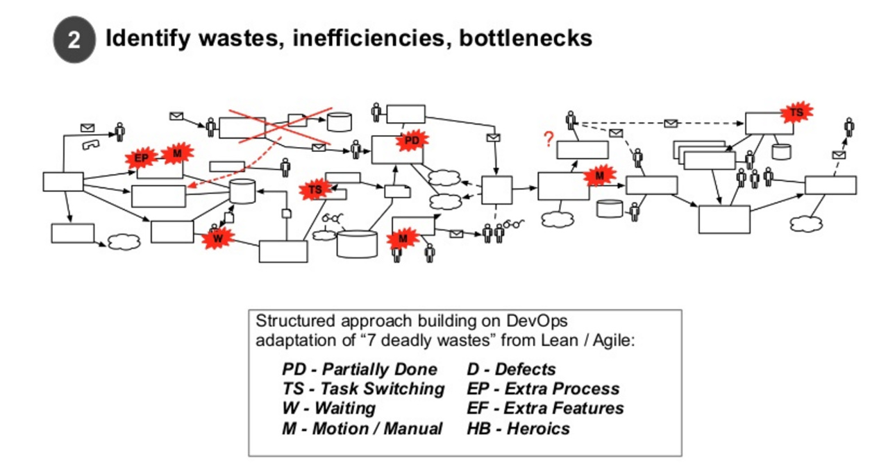
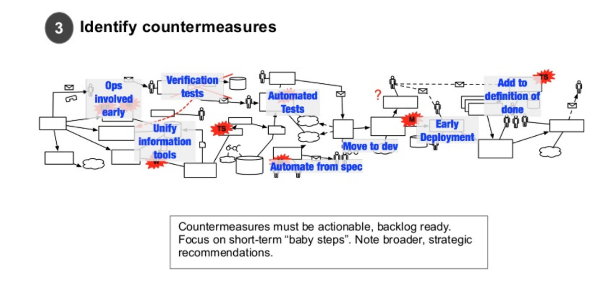
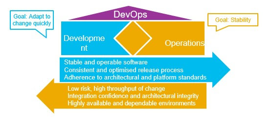
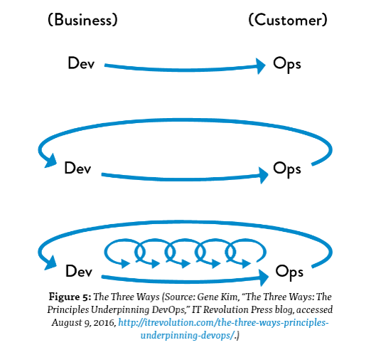
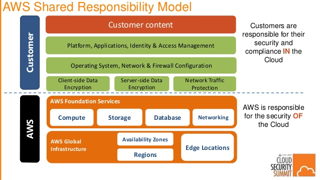

AT&A Brownbag - DevOps Introductory Talk
Table of Contents
- 1. DevOps history and context
- 1.1. Agile
- 1.2. Dev <-> Ops
- 1.3. Dev <-> Test <-> Ops
- 1.4. Scaling up with full-control: Brakes for DevOps sports-car
- 1.5. DevOps processes
- 1.5.1. Collaboration / ALM
- 1.5.2. Version Control and Code Promotion
- 1.5.3. Dependency Management & Build Automation
- 1.5.4. Code Quality and Continuous Testing/Test Automation
- 1.5.5. Artifacts Repository, Security/Vulnerability Scanning
- 1.5.6. Automated Provisioning and Virtualization
- 1.5.7. Deploy Automation
- 1.5.8. Continuous Improvement (Logging/Monitoring/Continuous Audit)
- 1.5.9. IaaS, PaaS, CaaS, Cloud and Containers
- 1.6. The Egg theory
1 DevOps history and context
1.1 Agile
1.1.1 Toyota Kata Movement
1.1.2 Agile in Software Development
1.1.3 Extreme Programming (XP)
1.1.4 Value Stream: Customer Experience vs Management Experience
| Customer Experience of Lead Time | Management Experience |
|  |  |
1.1.5 Value Stream: Identify wastes, inefficiencies, bottlenecks

1.1.6 Value Stream: Identify countermeasures

1.2 Dev <-> Ops
Different priorities of Development team, QA Team and IT Operations teams.

| Dev | Ops |
| Increased rate of application releases | Shorter lead time to deliver releases to customer |
| Business unit requires faster delivery of value stream | BU requires short duration to deliver value to customer |
| Dev and QA require stable and operable software | Low risk, high throughput of change |
| Need effective process of app monitoring and management | Need standardized approach to manage different environments |
| Consistent and optimized release process | Integration confidence and architectural integrity |
| Adherence to architectural and platform standards | Highly available and dependable environments |
- Transformation
- Agile DevOps and people transformation
- Existing process transformation
- Technology patterns
- Reusable components
- Maximize automation
- Effective communication
- Collaboration
- Standardized release flow
- Standardized practices
1.2.1 DevOps the three principles

- Principle of Flow
- fast and smooth flow of work from Development to Operations
- Principle of Feedback
- feedback and feed-forward loops. Detect and remediate problems while they are smaller, cheaper, and easier to fix; avert problems before they cause catastrophe
- Principle of Continuous Experimentation or Continuous Improvement
- Instead of punishing mistakes, promote a culture of continuous experimentation and learning. Applying a scientific approach to both process improvement and product development, learn from our successes and failures, identifying which ideas don’t work and reinforcing those that do.
1.3 Dev <-> Test <-> Ops

1.3.1 Software Development: Agile gear and DevOps
1.3.2 Ops/Infrastructure
1.3.3 Concentration/movement of business logic
| Single Server/Mainframe | N-Tier | Microservices | Mobile revolution | Cloud Infrastructure/Containerization | Blockchain & future |
1.4 Scaling up with full-control: Brakes for DevOps sports-car
1.4.1 Brakes
Why are brakes applied to the sports car ? Brakes are there in the sports car to allow you to speed up. ISACA guidelines, DevOps Controls
1.4.2 ISACA Guidelines: Basic DevOps Controls
- Automated Software Scanning
- Security or coding issues
- Automated Vulnerability Scanning
- Identify potential security issues in automated configuration management
- Web Application Firewall or other 7 Layer firewalls
- Stopgap to mitigate the consequences while underlying issue is remediated
- Use reverse proxy or web server filter in communication path
- Developer application security training
- Avoid inadvertent introduction of vulnerabilities
- Software dependency management
- Track dependency libraries, supporting components, middleware, other dependencies for security/licensing issues
- Access and activity logging
- DevOps separation of duties requires logging and visibility in place
- Log the access, activities, change tracking.
- Documented policies and procedures
- Document policies and procedures, describe the release flow
- employ rigor and discipline to ensure that security and risk management goals are met
- Application performance management
- Continuous metrics about application performance and flag potential problem areas when/if they occur
- Asset management and inventorying
- Retain a record of applications and important information
- Business owner and purpose
- Domain and subject matter experts
- Physical or virtual location
- Supporting controls and countermeasures
- Retain a record of applications and important information
- Continuous auditing and/or continuous monitoring
- process and supporting tools to continuously validate proper operation of controls
1.4.3 Some DevOps KPIs
- Frequency + Speed of deployment
- Frequency + Speed of Build
- Cyclometric complexity
- Lines of change
- Code Coverage
- Speed + Frequency of build verification (QA)
- Deployment success rate
- Incident/defect ratio
- Requirements coverage ratio
- Feature usage analytics
- Mean time to restore service (MTTRS)
- Security test pass rate
- Code scanning detection rate

1.4.4 Why AWS… in Banks!
- IAM <-> Automated Deployments <-> Automated Compliance
Hashicorp Terraform, Packer
1.5 DevOps processes
Collaboration -> Build -> Package -> Test -> Provision -> Deploy -> Run & Monitor
1.5.1 Collaboration / ALM
- JIRA
- Confluence, Skype, Slack
1.5.2 Version Control and Code Promotion
- Git , Bitbucket
- CI: Jenkins
1.5.3 Dependency Management & Build Automation
- Maven, Gradle, Docker, Ant
- NPM, Gulp, Grunt
1.5.4 Code Quality and Continuous Testing/Test Automation
- Sonarqube, Selenium, Junit, Mockito, Jasmine, Karma, Cucumber
1.5.5 Artifacts Repository, Security/Vulnerability Scanning
- Artifactory, Nexus
1.5.6 Automated Provisioning and Virtualization
- Terraform
- Packer
- Openshift
1.5.7 Deploy Automation
- Ansible
- Chef
- Puppet
1.5.8 Continuous Improvement (Logging/Monitoring/Continuous Audit)
- Logstash, Elasticsearch, Kibana
- Splunk
- Appdynamics
1.5.9 IaaS, PaaS, CaaS, Cloud and Containers
- AWS
- Openshift